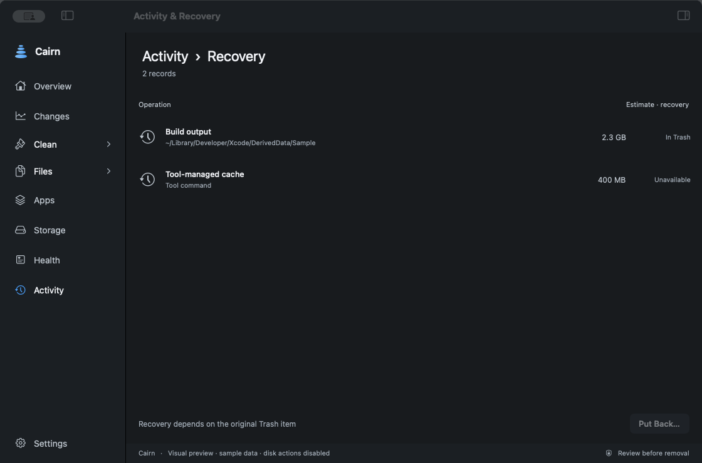

Smart
Uses the item’s cleanup method. Read which items will be deleted directly and which will go to Trash.
A clear next step
A cleanup should begin with understanding and end with an outcome you can check. Here is the path through Cairn.
Understand
Overview shows available space. Changes puts dated readings beside measured locations, helping you see what grew. Choose a space target in Make room, or inspect a category yourself.
A target is a planning aid. Missing permissions and partial scans are gaps in the evidence, not zero-byte folders.
Read the storage pictureChoose deliberately
Inspect each candidate’s size, requirements and destination. Check that build output can be recreated and that personal files are no longer needed. Uncheck anything you do not recognise.
Close tools if requested. A stale scan is not a reason to remove something that has changed since it was measured.
Read the protection boundaryKnow the consequence
Uses the item’s cleanup method. Read which items will be deleted directly and which will go to Trash.
Keeps eligible items in the Trash. This move alone does not free space on the volume.
Permanent removal cannot be put back through Cairn. Personal-file deletion requires an additional acknowledgement.
Protection checks still apply to the normal cleanup flow whichever mode you choose. Do not treat a removal mode as a way around a blocked path.
Check what happened
Activity & Recovery records actions and failures. Keep the selected file size separate from the amount of available space macOS reports afterwards.
Snapshots, purgeable data and other work on your Mac can affect that reading. Moving to Trash or copying to an external drive is not immediate internal space freed.
Read the action recordWhere supported
A recorded Trash item may offer Put Back while it is still present and matches the record. A permanent deletion, emptied Trash or changed item does not have that same recovery path.
If an operation is interrupted or uncertain, stop and inspect the recorded state. A cleanup receipt is not a backup.

For the work ahead
Understand the workflow before deciding what goes.